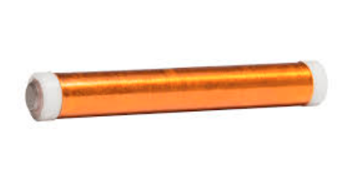
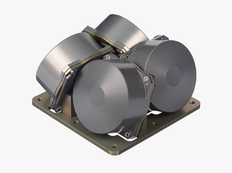
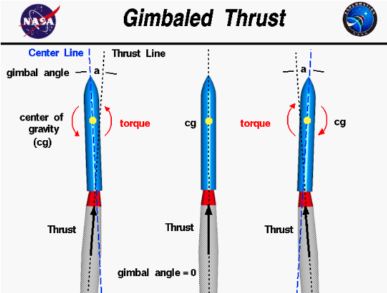
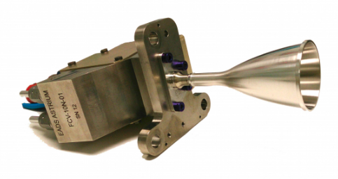
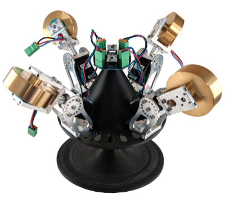

Section 20.3 Spacecraft Attitude Control
Attitude control is the means by which the orientation of the spacecraft is maintained within the orbit. Throughout the mission, the spacecraft experiences disturbance torques that are caused by a variety of sources, such as aerodynamics, gravity gradient, and solar radiation pressure discussed previously. These torques impart momentum which rotate the system away from its desired orientation. The purpose of attitude control is to reject these disturbance torques while simultaneously pointing towards a desired orientation. Possible active mechanisms for attitude control are magnetorquers, reaction wheels, thrust vector control, reaction control system, and control moment gyros.
There are several components that can be used for the attitude control of a satellite. Selecting the proper component is dependent on the orbit and its apogee/perigee, the system’s requirements, and the risks associated with the component. There are several steps involved with component selection. Typically the team will review the requirements and perform a preliminary risk analysis. This will generally help narrow down which components to use where. To determine the specific component, trade studies are conducted to compare the components from different manufacturers to determine the best one for the project at hand.
Subsection 20.3.1 Magnetorquers
The first option for attitude control is a magnetorquer. A magnetorquer, or torque rod, is built from electromagnetic coils. These coils produce a magnetic field that interacts with another magnetic field, typically Earth’s, which in turn produces a torque upon the satellite [51]. These components are used for changing the angular momentum of the satellite. In addition to attitude control, magnetorquers are also used for detumbling the satellite. Detumbling is a means of stabilizing the satellite after being inserted into the desired orbit [52]. The International Geomagnetic Reference Field (IGRF) is a software that reports the magnetic field of the earth by using latitude, longitude, and altitude from a GPS. This magnetic field is then used to determine the proper magnetic field required by the magnetorquer to maneuver the satellite.

An example of magnetorquer effectiveness is its ability to detumble during an orbit, and how many orbits it will take to completely detumble the spacecraft. First, the magnetorquer will have a magnetic moment value associated with the physical parameters of the rod \(\mu\text{.}\) First the average torque is computed by taking the magnetic moment and multiplying it with the average field strength and the point (from IGRF model). Then, this average torque is multiplied by total time of the orbit \(T_p\) to determine the magnetorquer’s momentum effectiveness over one orbit. Note that the torque from the magnetorquer’s \(\vec{M}_{MT}\) is substracted by the total disturbance torques \(\vec{M}_D\) to obtain the total effectiveness of the magnetorquers. From this, it is possible to calculate the number of orbits it will take to detumble the spacecraft on an axis.
\begin{equation}
N_{orbits} = \frac{||\vec{H_S}||}{T_p(\vec{M}_{MT}-\vec{M}_D)}\tag{20.3.1}
\end{equation}
The magnetorquer effectiveness boils down to the difference in the total moment that the magnetorquers can produce and the total disturbance momentum during the orbit. Then, the number of orbits that it will take for the spacecraft to detumble in an axis is a function of the magnetorquer effectiveness divided by the initial angular momentum in each axis.
Subsection 20.3.2 Reaction Wheels
Reaction wheels are mechanical disks, or flywheels, that rotate the satellite during orbit. The reaction wheels take in electrical power and provide a torque to the satellite [54]. This electrical power is provided to a DC motor which then spins the reaction wheel. Because momentum must be conserved, angular momentum must also be conserved. Thus, by Newton’s third law, when the reaction wheel rotates one direction the satellite rotates in the other. So, a minimum of one reaction wheel is placed on each axis to control the rotation in all directions. The primary role of a reaction wheel is to point the satellite without the use of any fuel.

The inertia storage for reaction wheels is a parameter that can be used to seek out the best reaction wheels for the spacecraft. Once the inertia storage is computed, one can search for reaction wheels with the proper amount of inertia storage required. For example, if a reaction wheel with an inertia storage of 50 mNms is needed, one can go to Blue Canyon Technologies website to find the datasheets for their different reaction wheels. From there, it can be determined that the best fit would be the RWP050 reaction wheels [56].
Once an estimate of the inertia of the satellite is obtained, they can be used to compute the required inertia storage of the reaction wheels. The tip off rate for a spacecraft is the rate at which the spacecraft’s angular velocity is altered due to its deployment. The following equation shows how momentum can be calculated due to tip off.
\begin{equation}
||\vec{H}_S|| = \max(\mathbf{I}_S)\omega_{TOR}f\tag{20.3.2}
\end{equation}
where \(\omega_{TOR}\) is typically set at 10 deg/s and f the factor of safety is typically set to 2.
Subsection 20.3.3 Thrust Vector Control (TVC)
When aerodynamic control surfaces are ineffective, TVC is a solution to maintain the vehicle’s correct attitude for the thrust duration. It accomplishes this goal by gimballing (rotating) the thrust chamber or by redirecting the exhaust-gas flow to develop torque [57]. However, thrust vectoring only moves the vehicle in two directions. TVC is typically used to control pitch and yaw attitude on boosters and upper stages.

Subsection 20.3.4 Reaction Control System (RCS)
Reaction control systems are small thrusters. These thrusters alter the speed of the spacecraft’s rotational or spinning motion. They are good for making quick turns and are used for getting to new orientations quickly. Reaction control thrusters are typically in "couples" or pairs of thrusters that together can spin the spacecraft without changing the lateral velocity. In addition, these thrusters usually work great with reaction wheels. When reaction wheels slow down, they produce a force. The RCS will oppose this force which allows the spacecraft to remain in the intended orientation [59].

Subsection 20.3.5 Control Moment Gyro
A CMG is a spinning rotor at a constant speed [25]. Similar to a reaction wheel, a CMG also has a spinning fly-wheel controlled by a brushless motor. However, the spin axis of a CMG can rotate with the help of a second motor placed on a gimbal axis. If the angular momentum can only rotate in a fixed plane, it is known as a single gimbal control moment gyros (SGCMG). GMCS are usually more efficient and produce higher torque than reaction wheels as the size of the unit increases [61].
